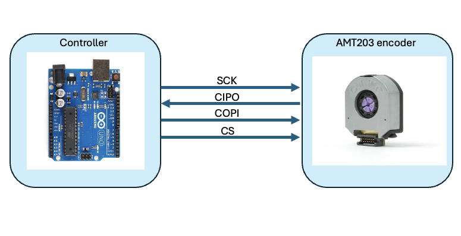
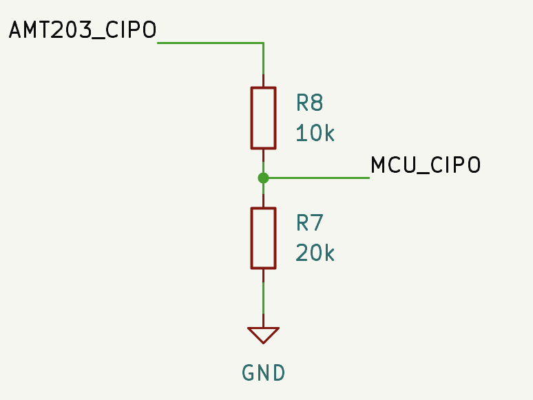

Encoders
The AMT203 encoders operate both as incremental encoders (through quadrature outputs) or absolute encoders (through SPI)
Absolute encoder :
The encoder features en internal register which updates the absolute position at a rate of 40us (25 kHz). It is interfaced over SPI

The encoder is both 3.3V and 5V tolerant, however the CIPO (controller-in peripheral out) pin will be 5V voltage level, therefore when using a 3.3V logic MCUs (like the Teensy or the Nano) you MUST shift down the voltage from CIPO before connecting it to the MCU.
When using an Arduino Uno R3 / R4, this is not an issue. However a typical setup for a 3.3V MCU is :

Using the voltage divider equation :
V_{out} = V_{in} \times \frac{R_2}{R_1 + R_2} V_{out} = 5 \times \frac{20k}{10k + 20k} V_{out} = 5 \times \frac{20}{30} V_{out} = 3.33V